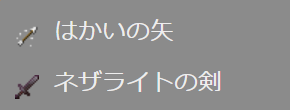
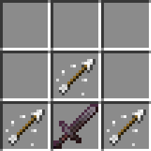
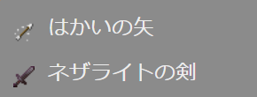
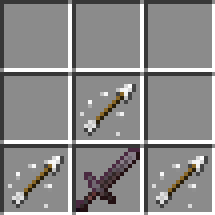

【はかいのつるぎ】
はじめに
▶いかずちの杖の場合は落雷による攻撃でしたが、今回はエンダークリスタルによる爆撃を対空武器として使えるようにしてみました。
▼一人称

▼横から見た場合

▶召雷の魔石で実装していた▶エンティティプロパティも採用しているので、▶ネットショップに接続中は発動しないのはもちろんですが、最初の爆発地点までのブランクが生まれるので爆風の影響が少なくなるようにしています。
それでもエンダークリスタルの爆風の威力が強すぎて、ある程度のダメージとノックバックの影響は受けます。
その為、上の画面ではダメージを受けた時のリアクションが入っていますが、実際は発射から数秒間の間は無敵状態にしているのでダメージが入らないようにしています。
▼上空に向かって放った場合

空中を旋回しているガストやファントムに対しても、ある程度の高さまでなら攻撃が届くので有利に戦えます。
▼破壊力の確認

威力が集中できる▶はかいの矢を使った▶機雷の弓に比べると攻撃力は劣りますが、小さな丘程度の地面であれば貫通します。
▼一人称
▼横から見た場合
▶召雷の魔石で実装していた▶エンティティプロパティも採用しているので、▶ネットショップに接続中は発動しないのはもちろんですが、最初の爆発地点までのブランクが生まれるので爆風の影響が少なくなるようにしています。
それでもエンダークリスタルの爆風の威力が強すぎて、ある程度のダメージとノックバックの影響は受けます。
その為、上の画面ではダメージを受けた時のリアクションが入っていますが、実際は発射から数秒間の間は無敵状態にしているのでダメージが入らないようにしています。
▼上空に向かって放った場合
空中を旋回しているガストやファントムに対しても、ある程度の高さまでなら攻撃が届くので有利に戦えます。
▼破壊力の確認
威力が集中できる▶はかいの矢を使った▶機雷の弓に比べると攻撃力は劣りますが、小さな丘程度の地面であれば貫通します。
「はかいのつるぎ」の取得
本環境のビヘイビアパック／リソースパックを含めたアドオンパックを適用しておけば、以下の方法で「はかいのつるぎ」が手に入ります。

▼レシピパターン

今回は無形レシピのため、アイテムの数さえ合っていれば配置は自由です。
※無形レシピの作り方や詳細は▶レシピの作り方（無形レシピ）のページをご覧ください。
▶ネットショップ

クラフトする場合
▼必要な素材
▼レシピパターン

今回は無形レシピのため、アイテムの数さえ合っていれば配置は自由です。
※無形レシピの作り方や詳細は▶レシピの作り方（無形レシピ）のページをご覧ください。
ショップで購入する場合
以下のショップで購入できます。▶ネットショップ
コマンドで取得する場合
以下はワールドオーナーやシステム組み込み用としてコマンドで取得する方法です。おわりに
今回の実装でも▶風の杖の時と同じようにクライアント（マインクラフト）側での実装がメインとなっています。
実装のベースは発射アイテムによる発射体カスタムエンティティの発射ですが、発射体の移動と伴にエンダークリスタルの召喚コマンドを実行する事で、発射アイテムをかざした方向へ直線的に爆撃できるようにしています。
この実装によって爆撃の効果が遠くまで及ぶので、上記の画面で地面を破壊したイメージのように、ある程度のブロックの厚みがあっても貫通させる事ができます。
また、「はかいのつるぎ」は▶いかずちの杖と融合させて使う事もできます。
詳しくは▶融合可能アイテムのページをご覧ください。
なお、今回のアイテムの実装は▶発射アイテムと▶発射体エンティティのページでご紹介させて頂いた作り方を基に応用したものです。
実装のベースは発射アイテムによる発射体カスタムエンティティの発射ですが、発射体の移動と伴にエンダークリスタルの召喚コマンドを実行する事で、発射アイテムをかざした方向へ直線的に爆撃できるようにしています。
この実装によって爆撃の効果が遠くまで及ぶので、上記の画面で地面を破壊したイメージのように、ある程度のブロックの厚みがあっても貫通させる事ができます。
また、「はかいのつるぎ」は▶いかずちの杖と融合させて使う事もできます。
詳しくは▶融合可能アイテムのページをご覧ください。
なお、今回のアイテムの実装は▶発射アイテムと▶発射体エンティティのページでご紹介させて頂いた作り方を基に応用したものです。